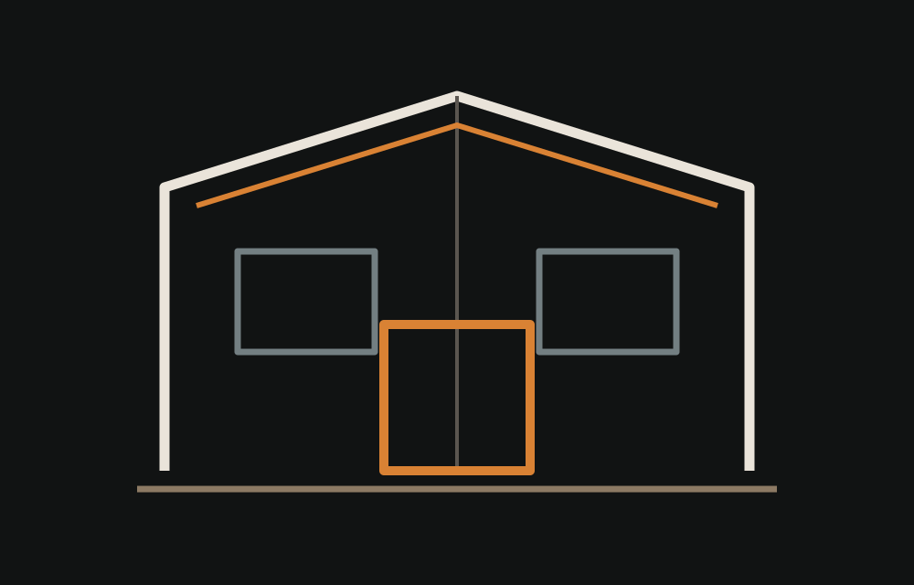
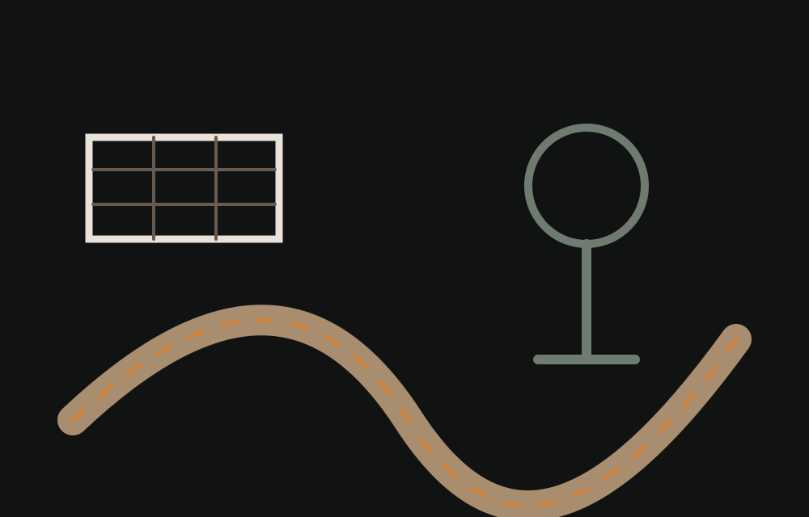

Comprendre
Besoin, accès, contraintes du terrain, délai et niveau de finition recherché.
Terrassement, maçonnerie, ravalement de façade, isolation et aménagement extérieur avec une approche de chantier claire, solide et organisée.
ORIS BAT PRO intervient sur plusieurs étapes d’un projet pour proposer une lecture plus simple du chantier, de la préparation du terrain aux finitions extérieures.

Décaissement, fouilles, nivellement, réseaux et préparation des accès.
Découvrir ↗
Murs, ouvrages maçonnés, reprises et travaux de petite maçonnerie.
Découvrir ↗
Ravalement, traitement des façades et travaux d’isolation selon le projet.
Découvrir ↗
Préparation, accès, sols extérieurs et organisation des espaces.
Découvrir ↗Besoin, accès, contraintes du terrain, délai et niveau de finition recherché.
Organisation du chantier, matériel, terrassement ou supports nécessaires.
Exécution par étapes avec contrôle visuel et adaptation aux conditions du terrain.
Nettoyage, vérification du périmètre réalisé et restitution claire au client.
Un parc pensé pour gagner en autonomie sur les travaux de terrain et les interventions de proximité.


Illustrations graphiques du parc matériel, non photographies des véhicules réels.
En attendant les premières photos fournies par l’entreprise, les visuels restent clairement identifiés comme illustrations.
Décrivez le besoin, la commune, le délai et joignez quelques photos si nécessaire.